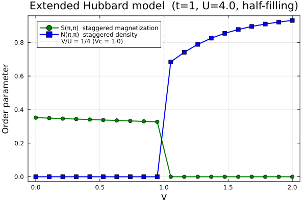

Example: SDW-CDW Phase Diagram of Extended Hubbard Model
This example demonstrates the phase diagram of the extended Hubbard model on a 2D square lattice at half-filling, reproducing the competition between spin density wave (SDW/AFM) and charge density wave (CDW/CO) orders.
The ground state is found automatically using symmetry-breaking warmup restarts — no prior knowledge of whether SDW or CDW is the ground state is required.
Physical Model
\[H = -t \sum_{\langle ij \rangle,\sigma} (c^\dagger_{i\sigma}c_{j\sigma} + \text{h.c.}) + U \sum_i n_{i\uparrow}n_{i\downarrow} + V \sum_{\langle ij \rangle} n_i n_j\]
\[t\]
: nearest-neighbor hopping (set to 1)\[U\]
: on-site Coulomb repulsion (fixed at 4)\[V\]
: nearest-neighbor Coulomb repulsion (swept from 0 to 2)
At half-filling two phases compete:
- SDW/AFM ($V/U \lesssim 1/4$): staggered magnetization $S(\pi,\pi) \neq 0$
- CDW/CO ($V/U \gtrsim 1/4$): staggered charge density $N(\pi,\pi) \neq 0$
The phase boundary is expected at $V_c = U/4 = 1$.
The order parameters are:
\[S(\pi,\pi) = \frac{1}{N_\text{cell}} \sum_i e^{i\mathbf{Q}\cdot\mathbf{r}_i} \frac{n_{i\uparrow} - n_{i\downarrow}}{2}, \qquad N(\pi,\pi) = \frac{1}{N_\text{cell}} \sum_i e^{i\mathbf{Q}\cdot\mathbf{r}_i} (n_{i\uparrow} + n_{i\downarrow})\]
with $\mathbf{Q} = (\pi,\pi)$.
Method
The calculation uses momentum-space unrestricted Hartree-Fock (solve_hfk) on a $2\times2$ magnetic unit cell (4 sites × 2 spins → $d=8$) with a $2\times2$ $k$-grid (4 $k$-points). For each value of $V$, a single solve_hfk call with n_restarts=10 and field_strength=1.0 finds the ground state automatically. The phase is then determined by comparing the converged order parameters $S(\pi,\pi)$ and $N(\pi,\pi)$ directly.
This replaces the old approach of running twice from hand-crafted SDW and CDW initial conditions and comparing energies. Since both SDW and CDW are competing ordered phases, the random symmetry-breaking field explores both directions across different restarts.
Code
# Lattice: 2×2 magnetic unit cell, sites at (0,0),(1,0),(0,1),(1,1)
dofs = SystemDofs([Dof(:site, 4), Dof(:spin, 2, [:up, :dn])])
unitcell = Lattice([Dof(:site, 4)], [QN(site=i) for i in 1:4],
[[0.0,0.0],[1.0,0.0],[0.0,1.0],[1.0,1.0]];
vectors=[[2.0,0.0],[0.0,2.0]])
nn_bonds = bonds(unitcell, (:p,:p), 1)
onsite_bonds = bonds(unitcell, (:p,:p), 0)
onebody = generate_onebody(dofs, nn_bonds,
(delta, qn1, qn2) -> qn1.spin == qn2.spin ? -t_ext : 0.0)
kpoints = build_kpoints([[2.0,0.0],[0.0,2.0]], (2,2))
n_elec = 4 * length(kpoints) # half-filling
# On-site Hubbard U (built once, reused for all V)
U_ops = generate_twobody(dofs, onsite_bonds,
(deltas, qn1, qn2, qn3, qn4) ->
(qn1.spin, qn2.spin, qn3.spin, qn4.spin) == (1,1,2,2) ? U_ext : 0.0,
order = (cdag, :i, c, :i, cdag, :i, c, :i))
# V sweep: ground state found automatically via symmetry-breaking restarts
for V in Vs
V_ops = generate_twobody(dofs, nn_bonds,
(deltas, qn1, qn2, qn3, qn4) ->
qn1.spin == qn2.spin && qn3.spin == qn4.spin ? V/2 : 0.0,
order = (cdag, :i, c, :i, cdag, :j, c, :j))
twobody = (ops = [U_ops.ops; V_ops.ops],
delta = [U_ops.delta; V_ops.delta],
irvec = [U_ops.irvec; V_ops.irvec])
r = solve_hfk(dofs, onebody, twobody, kpoints, n_elec;
n_restarts = 10, # independent random restarts
field_strength = 1.0, # random symmetry-breaking field, O(t)
n_warmup = 15, # field decays to zero after 15 iters
tol = 1e-8,
verbose = false)
S_q, N_q, _, _ = observables(r.G_k)
# Phase determined from converged order parameters, not from initial conditions
phase = S_q >= N_q ? "SDW" : "CDW"
endWhy this works for two competing phases
Unlike the AFM-only case, here both SDW and CDW are valid broken-symmetry ground states depending on $V$. The random Hermitian field $\Delta$ that is injected at each restart has no preferred spin or charge character — it breaks symmetry in a random direction in the full $d\times d$ orbital space, which covers both SDW-like (spin-polarized) and CDW-like (charge-polarized) perturbations. Different restarts explore different directions, and the solver retains the lowest-energy converged result. The phase is then read off directly from the dominant order parameter.
Running the Example
julia --project=examples -t 8 examples/SDW_CDW/run.jlThis will:
- Sweep $V$ from 0 to 2 (20 points) at fixed $U=4$, $t=1$
- For each $V$, run
solve_hfkwith 10 symmetry-breaking restarts - Compute $S(\pi,\pi)$ and $N(\pi,\pi)$ from the converged ground state
- Determine the phase from the dominant order parameter
- Save results to
res.datand generatesdw_cdw.png
Results
The calculated phase boundary at $V_c = U/4 = 1.0$ and the order parameter curves are in complete agreement with Fig. 5(b) of Ref. [1].

References
[1] T. Aoyama, K. Yoshimi, K. Ido, Y. Motoyama, T. Kawamura, T. Misawa, T. Kato, and A. Kobayashi, H-wave – A Python package for the Hartree-Fock approximation and the random phase approximation, Computer Physics Communications 298, 109087 (2024).